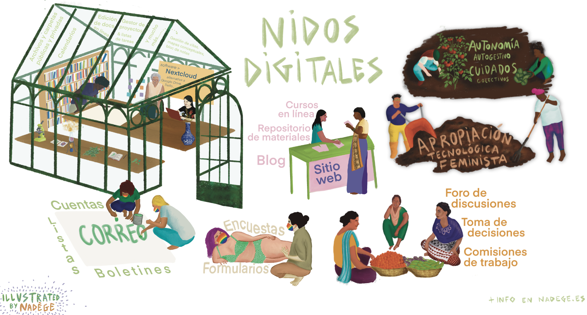
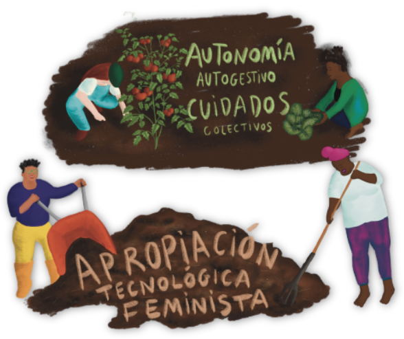
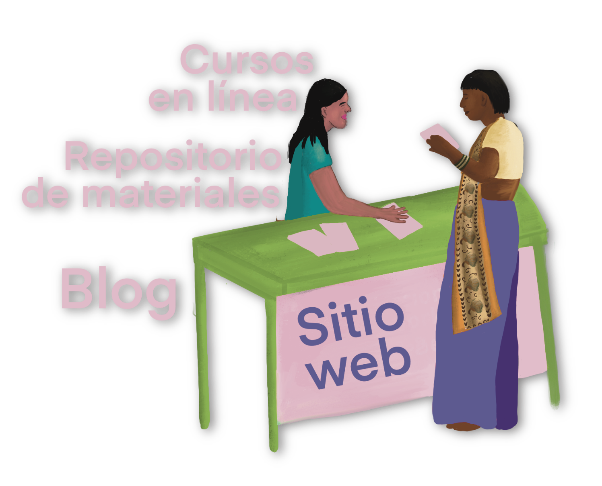
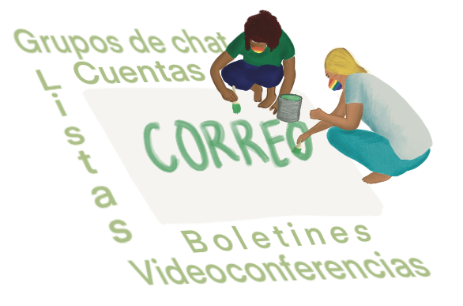
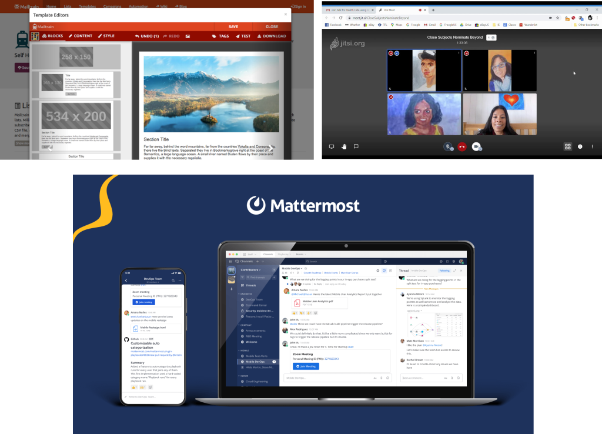
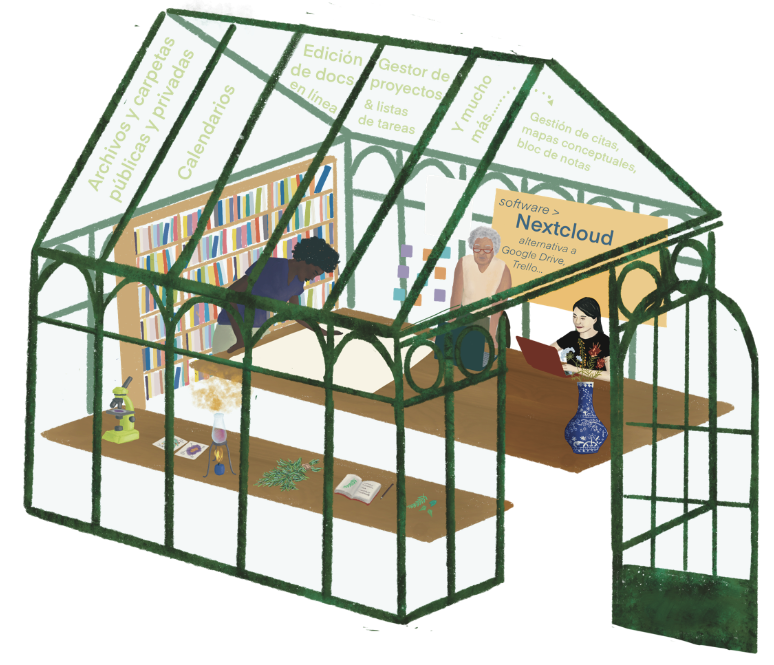
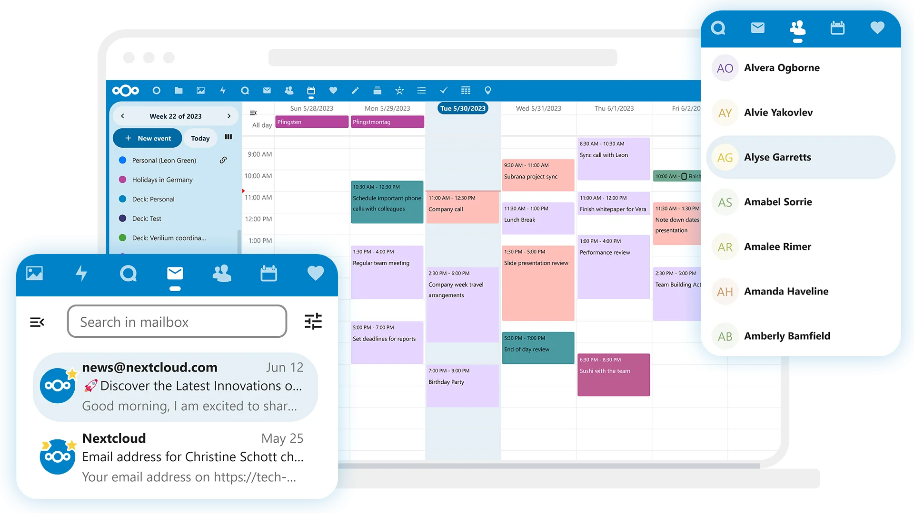
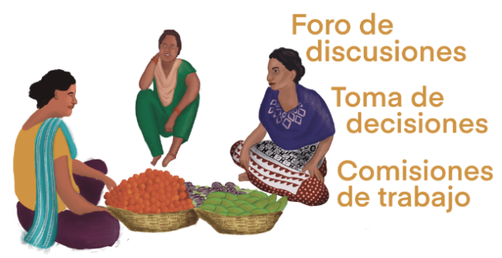
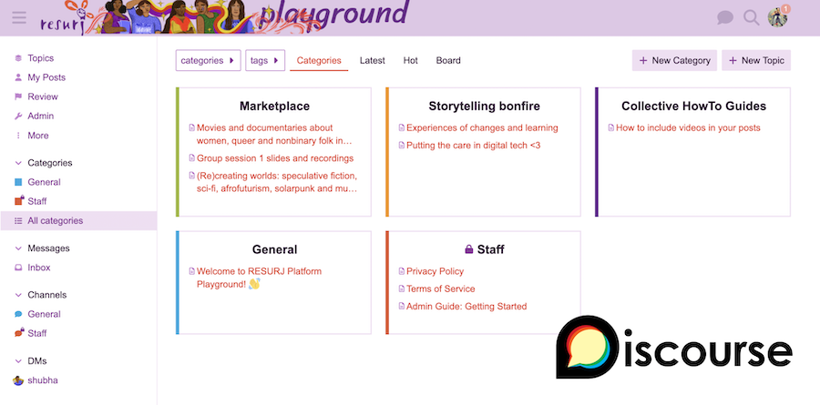

Navigate this presentation:
Use the arrows (bottom right corner of the screen) or scroll on your cellphone. Go into detail in each section browsing upwards & downwards; pass from one section to the other going left/right.
Go into detail in each section browsing upwards & downwards; pass from one section to the other going left/right.
Ok, lets try: press the down arrow or scroll down to the next slide...
Most people use the internet through mainstream platforms such as Whatsapp, Google, Instagram, Youtube, Facebook, TikTok, etc.
These big tech companies "offer" their services apparently for "free": well, actually, the small print says in exchange for our data which is used to develop technology based on artificial intelligence and machine learning, invasive marketing, databases with all types of personal information.
And why should this worry us? These corporations collaborate with governments, entities of control and authority, private companies, and sell their products to the best bidder including right wing and poltical parties.
Beyond the fact that we might or might not have the feeling and/or certainty that we are under surveillance for our political activity, we are feeding a system that discriminates and causes a lot of harm.
Since the beginning of internet, there have been groups of people that create technology based on other values and principles designed to respect our privacy and freedom.
The libre/free software and culture ecosystem is diverse: from big organizations like Ubuntu, Mozilla (Firefox) and Wordpress, to small projects of one or two people.
Libre/free software gives people the choice to:
obtain clear and transparent information about the tech tools they use (how does it work? for what purpose?)
self/collectively manage them (for example, hosting your platform on your own server)
in some cases, create your own version (grabbing the code and modifying it to meet your needs and interests).
But, if its that great, why aren't these alternatives more well known and implemented?
Good question! Well, mainstream big tech has a lot of power, basically...
They've gained a critical mass of users: migrating to alternate spaces and tools can make us feel that we are going to miss out and isolate ourselves.
Thye seem to be "easier to use" because we tend to be more exposed to them and more people around us know how to use them and potentially help us out.
In some aspects they "work really well" and offer loads of features because they have hundreds and sometimes thousands of workers (most of them exploited by the way) and huge budgets.
They can offer their services for "free" because they profit from user data.
However, alternative free/libre platforms...
Imply a learning curve, reading documentation, seeking help; in other words, time (which we don't always have or don't want to give).
They function differently and, sometimes, offer less features such as storage space or speed.
Some ask for a money-based contribution to sustain the project or require covering your own web hosting and maintenance.
So yes, it implies change: a change of ways, a change of life... Like when we want to cultivate a more direct relationship with what we eat.
A cooperative doesn't aspire to be a multinational. A libre/free platform doesn't aspire to be Whatsapp or Instagram.
Thanks to the persistence and resistence of these projects, we count with a vast ecosystem of options, most of which relatively accesible with adequate help and support.
There are groups and people that are invested and have experience in providing accompaniment and guidance to transform our relationship with technology and migrate to options more aligned with our values and needs. People like us. But...who are you? I'm Shubha ... I'm Nadège and I've been walking along collectives, organizations and grassroot movements for the last 15 years. I've been part of different transhackfeminist tech projects and networks, including an infrastructure cooperative called Kéfir which served the community for 6 years. You can see my work at: https://nadege.es
Un aspecto esencial al abordar estos procesos desde una perspectiva feminista es cuestionar el paternalismo de "no te preocupes, yo hago todo por ti". En el software y cultura libre se puede dar mucho esa actitud de profetizar y querer convertir a la gente.
"Desmistificar" la noción de tecnologías, generar un ambiente donde sentimos que podemos equivocarnos, despertar lo lúdico y placentero, ofrecer diferentes caminos para diferentes personas y grupos.
Y al mismo tiempo, discernir cuando no tenemos tiempo o capacidad; es importante poder delegar en otres, justo porque ya andamos en el malabarismo del trabajo, el activismo, los vínculos, el espacio propio, el autocuidado...
Ahora veamos ejemplos de plataformas alternativas.

La noción de "nidos digitales" es una derivación de "vecindades digitales", conceptado creado por Liliana Zaragoza Cano (Lili_Anaz) y que busca hacer hincapié en las interconexiones y relaciones en el habitar tecnologías libres.
Porque crear un barrio para nosotrxs es sentir que podemos generar espacios que tienen sentido para nuestras comunidades, desde el lenguaje que se emplea y el aspecto gráfico de sus interfaces hasta las tomas de decisiones (¿qué plataformas y funcionalidades necesitamos? ¿en quién vamos a confiar para manejar nuestros datos privados?).


Sitios web: espacios-puente para compartir inform-acción.
Pueden ser específicamente diseñados para cierta finalidad como:- Blogs: a modo de bitácora
- Repositorios: catálogos organizados de información
- Cursos: espacios de aprendizaje en línea
Wordpress es probablemente una de las herramientas de software libre más conocidas y es empleada por millones de sitios en internet. Se puede instalar en tu propio servidor (infraestructura) y a través de plugins (programas adicionales) configurar para muchísimos usos como los anteriormente mencionados.

Comunicación
Alternativas a Gmail, Zoom, Whatsapp, Mailchimp, Facebook, etc.- Cuentas de correo
- Listas de correo
- Boletines (newsletter)
- Grupos de chat
- Videoconferencias
Desde el origen de internet, antes de la existencia de Whatsapp, Instagram, Zoom, Microsoft y otras plataformas hegemónicas, las personas utilizaban sus medios propios de comuicación. Hay muchas herramientas de software libres disponibles como Mailman, Postfix, Mailtrain, Mattermost, Jitsi Meet.

Encuestas y formularios
Alternativas a Google Drive.Existen herramientas confiables como Limesurvey

Flujos de trabajo: espacios de trabajo colectivo.
Alternativas a Google Drive, Trello, etc.- Archivos & carpetas
- Edición de documentos en línea
- Calendarios & gestión de actividades
- Gestor de proyectos & listas de tareas

Nextcloud es un proyecto de largo recorrido que ofrece muchas funcionalidades nativas, aparte de otras que pueden agregarse a través de aplicaciones. Se puede acceder tanto desde ordenador como dispositivos móviles.
Gobernanza colectiva
Alternativa a Whatsapp- Foros de discusiones e intercambio de recursos y procesos
- Herramientas de toma de decisiones: por consentimiento, consenso, consejo
- Grupos y comisiones de trabajo: espacios de organización y discusión por subgrupos

Discourse es otro proyecto de amplia trayectoria. Ofrece la posibilidad de crear foros públicos o privados con canales y subcanales, organizados por categorías. Se puede acceder tanto desde ordenador como dispositivos móviles.Espero que esta presentación amplie tu imaginario sobre alternativas más seguras, feministas y autónomas en internet. No dudes en escribirme a contacta@nadege.es.
Gracias por tu tiempo ;)